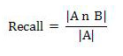
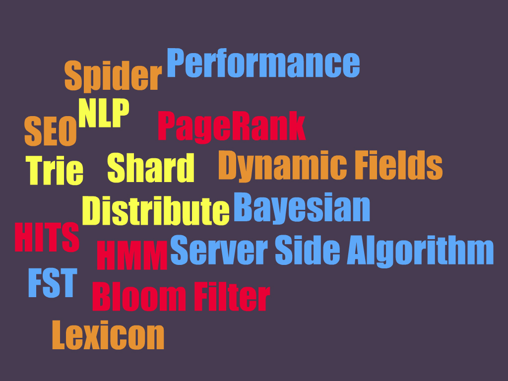

Introduction to
Full Text Search and Frameworks
@atealxt
Agenda
- Full Text Search
- Frameworks
- Structure
- Indexing & Search
- Features
- Evaluating
- Reference
Full Text Search
Serial Scanning
- String.indexOf
- Select * from PRODUCT t where DESCRIPTION like '%Paper%';
- ps -ef|grep java
Full Text Search
Serial Scanning
- String.indexOf
- Select * from PRODUCT t where DESCRIPTION like '%Paper%';
- ps -ef|grep java
Full Text Search
In a full-text search, a search engine examines all of the words in every stored document as it tries to match search criteria (text specified by a user).
—— wikipedia
Full Text Search


—— Lucene in Action

Frameworks
Demo First
Endeca
- JSP Reference
- Workbench
Solr
- http://localhost:8983/solr/
- http://localhost:8983/solr/browse
Elasticsearch
- http://localhost:9200/?pretty
- http://localhost:9200/_all/_mapping?pretty
- Kibana, Marvel, Elastic HQ
Structure
- p_SKU
- p_BRAND
- p_SKU_SHORT
- p_SKU_LONG
- [p_KEY_WORD]
- p_IMAGE_FILE_NAME
- p_UOM
Structure
- p_SKU
- p_BRAND
- p_SKU_SHORT
- p_SKU_LONG
- [p_KEY_WORD]
- p_IMAGE_FILE_NAME
- p_UOM
- [p_ALTERNATE]
- p_START_DATE
- p_END_DATE
Structure
- p_SKU
- p_BRAND
- p_SKU_SHORT
- p_SKU_LONG
- [p_KEY_WORD]
- p_IMAGE_FILE_NAME
- p_UOM
- [p_ALTERNATE]
- p_START_DATE
- p_END_DATE
- [p_CATEGORY]
- p_DEFAULT_NAVIGATION_ID
Structure
- p_SKU
- p_BRAND
- p_SKU_SHORT
- p_SKU_LONG
- [p_KEY_WORD]
- p_IMAGE_FILE_NAME
- p_UOM
- [p_ALTERNATE]
- p_START_DATE
- p_END_DATE
- [p_CATEGORY]
- p_DEFAULT_NAVIGATION_ID
- p_PRICE
- Stock, Sales, Status
Indexing & Search
Field options
- Index ?
- Store ?
- Multiple ?
- TermVector ?
Indexing & Search
- Tokenizer
- Filter
Indexing & Search
Tokenizer
- Standard Tokenizer
- Whitespace Tokenizer
- Keyword Tokenizer
- Path Hierarchy Tokenizer
- Pattern Tokenizer
- nGram Tokenizer
-
Language Specific Tokenizer
Indexing & Search
Filter
- Stop word Filter
- Synonym Filter
- LowerCase Filter
- Trim Filter
- Porter Stem Filter
- Word Delimiter Filter
- More
Indexing & Search
Query Syntax
- Field: 'name:value'
- Logic: 'AND', 'OR', 'NOT'
- Rank: '^1.5', '^0.5'
- Range: '[', ']'
Indexing & Search
Query Parameter
- Query string
- Sort: asc, desc
- Offset: start, rows
- Filter result
- Returning fields
Indexing & Search
Scoring
Term Frequency (tf)
How many times the term t occurs in the document.
Document Frequency (df)
A measure of how “unique” the term is. Very common terms have a high df; very rare terms have a low df.
Term weight
Indexing & Search
Examples
Solr
Get docs name contains 'Test' and features contains '功能'
Elasticsearch
Get 20 play name, text and speech# which text contains 'Tempest', and order by play name
Features
- Data Import
- Aggregation
- Navigation
- Search Suggester
- Stemming
- Keyword 301/302
Features
Data Import
Features
Data Import
Solr:
JDBC, CSV, XML, Tika, URL, Flat File
- user:~/solr/example/exampledocs$ java -jar post.jar *.xml
- http://wiki.apache.org/solr/DataImportHandler
Features
Data Import
Solr:
JDBC, CSV, XML, Tika, URL, Flat File
- user:~/solr/example/exampledocs$ java -jar post.jar *.xml
- http://wiki.apache.org/solr/DataImportHandler
Elasticsearch:
CouchDB, Dropbox, FileSystem, Git, JDBC, JMS, Kafka, LDAP, MongoDB, Redis, RSS, Solr, Subversion, Twitter, Wikipedia
- curl -XPUT localhost:9200/_bulk --data-binary @shakespeare.json
- https://github.com/jprante/elasticsearch-river-jdbc
Features
Aggregation (Faceting)
Endeca
Get black pens
Solr
- Facet by category and price between 350 - 400
- solrconfig.xml
Elasticsearch
http://www.elasticsearch.org/guide/en/elasticsearch/reference/current/search-aggregations.html
Features
Search Suggester (Predictive Search, Auto complete)
Features
Search Suggester (Predictive Search, Auto complete)
Trigger by input timeout
Features
Search Suggester (Predictive Search, Auto complete)
Trigger by input timeout
Chains of validations: length, blacklist, script injection
Features
Search Suggester (Predictive Search, Auto complete)
Trigger by input timeout
Chains of validations: length, blacklist, script injection
Dict from: record refining, search history, manual. (P l-h)
Features
Search Suggester (Predictive Search, Auto complete)
Trigger by input timeout
Chains of validations: length, blacklist, script injection
Dict from: record refining, search history, manual. (P l-h)
Matches:
Whole + forward max (prefix) + partly (suffix, infix). (P h-l)
More frequently is better, less length is better.
Limit result count, at least one per each.
Features
Search Suggester (Predictive Search, Auto complete)
Solr
-
Use terms.prefix 't'
http://localhost:8983/solr/collection1/terms?q=t&limit=10×tamp=1409491138437&terms.prefix=t&terms.sort=count&terms.fl=name&wt=velocity&v.template=suggest - http://wiki.apache.org/solr/Suggester
Endeca
Features
Stemming
- stopwords
- synonyms
- spellings
- lemmatization
- domain noun
- pinyin
Features
Keyword 301/302
Evaluating
Fast, Exact, Full, New
Steps
- Prepare Data
- Pick-up User Cases
- Testing
- Statistics
- Training
Evaluating
Methods
- Recall-Precision
- Discounted Cumulative Gain
Evaluating
Recall-Precision
A: Relevant Document Collection
B: Search Result

Evaluating
Discounted Cumulative Gain (DCG)
rel: Very Good:2 / Good:1 / Fair:0 / Bad:-1 / Very Bad: -2
reli: Score of #i
p: Number of Docs at result page
IDCG: Ideal DCG
Reference
- Lucene in Action
- https://lucene.apache.org/solr/4_9_0/tutorial.html
- https://wiki.apache.org/solr/
- http://www.elasticsearch.org/guide/en/elasticsearch/guide/current/index.html
- http://www.elasticsearch.org/guide/en/elasticsearch/reference/current/index.html
- http://solr-vs-elasticsearch.com/
- http://www.cnblogs.com/guochunguang/articles/3641008.html
- http://www.infoq.com/cn/articles/cyw-evaluate-seachengine-result-quality
It is just the start

Q&A
Thank You!